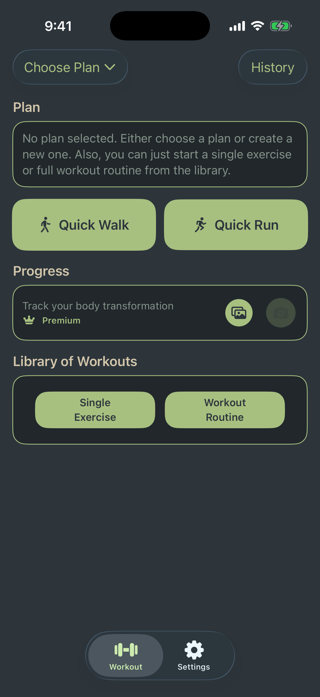
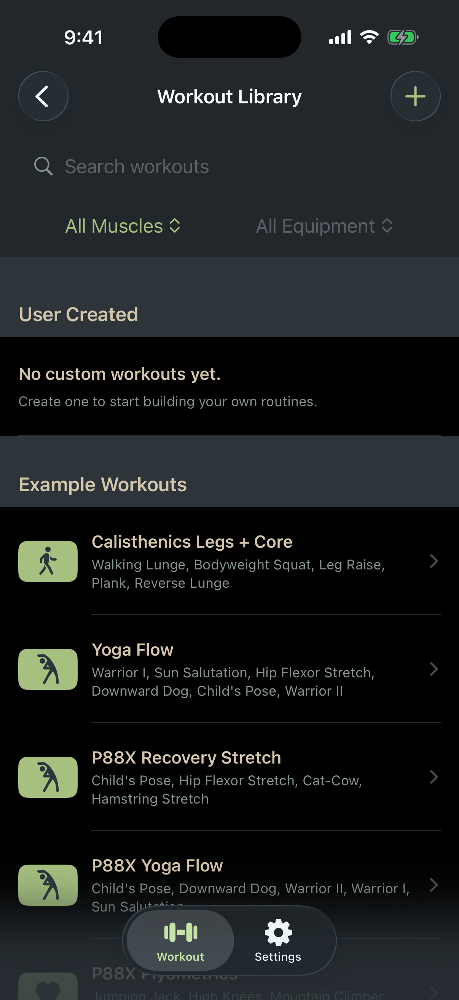
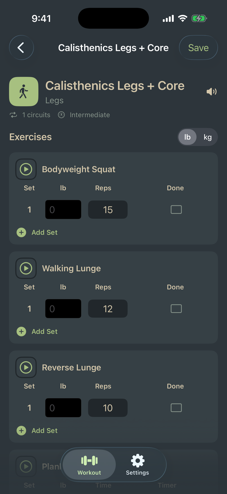

Seven-day plans
Choose or create a plan, see the current day, and keep completed workouts connected to your schedule.
Loaf brings plans, workout routines, individual exercises, timers, history, and progress together without an account or a crowded social feed.
Move from a simple home screen to the workout library and a set-by-set training view.



Enough structure to build consistency, with flexibility for whatever today looks like.
Choose or create a plan, see the current day, and keep completed workouts connected to your schedule.
Browse bodyweight routines, filter by muscle group and equipment, or build your own Premium training.
Record weight, repetitions, timed holds, completed sets, and notes while you train.
Review completed sessions and explore progress by exercise across your training history.
Start quick cardio sessions or unlock the guided grip-strength section with Premium.
Use your camera or photo library to build an on-device visual record of your progress.